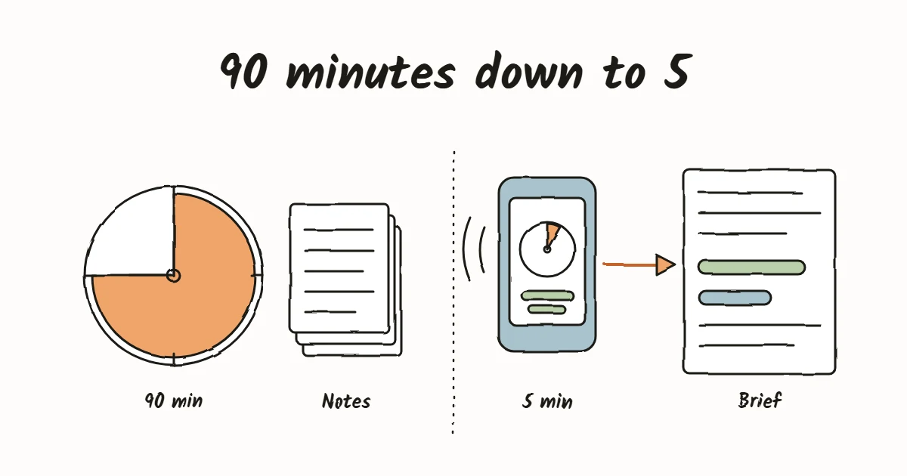

How we replaced 90-minute discovery calls with a five-minute AI phone call.

Kara is our AI intake assistant. She phones every new prospect, learns how their business runs and how their team uses AI, and hands the two of us a written brief before we decide whether to meet.
Every engagement used to start the same way. Someone booked a call, and we spent the first hour and a half asking the questions any forward-deployed engineer asks before building anything: what does the business do, where does the work come in, which tools does it touch, who checks it, how long does it take, and why now. It is the right work. It is also the same work every time, and it cost both founders an afternoon before we knew whether there was anything to build.
So we built an agent to do that first conversation. A prospect picks a time on our booking page, or asks to be called right away, and Kara rings them from a Tampa number. The call takes about five minutes. Afterwards we get an email with what she learned, two scores, and a recommendation on whether to meet. We built and tested the whole system in about a day.
What happens on a call
Kara opens by saying she is an AI assistant and asking whether the call can be recorded. Then she works through a fixed shape, one question at a time:
- Context. What the business does, the person's role, team size, location, and what made now the time to reach out.
- One workflow, in depth. She asks for one recurring job they would take off the team's plate, then: "Walk me through the last time that happened." Short follow-ups cover where it lives, who does it, who checks it, how often, how long, and what happens when it goes wrong.
- AI on the team. Which tools they use, whether the company pays for them, how many people use them, a real example from the past week, and what they would want the team able to do after training.
- Close. She plays back the two most important things she heard and tells them the founders will reply by email within one business day.
She does not pitch, quote prices, or tell anyone whether they are a good fit. That is our job, and keeping her out of it was one of the first fixes we made after a test call.
The stack
Every piece is a hosted service we configure rather than infrastructure we run. The only code we own is one small Cloudflare Worker.
- ElevenLabs Agents runs the conversation: speech recognition, turn-taking, interruptions and the voice. Inside the call it uses Claude Haiku 4.5, a small model chosen for speed, because on the phone every half second of silence is noticeable. After the call, ElevenLabs pulls 25 structured fields out of the transcript and sends them, with the transcript, to a signed webhook.
- Claude does the slower thinking on either side of the call. Before the call it researches the company with web search, so Kara can ask "I saw you manage about forty properties, is that right?" instead of starting cold. After the call it turns the transcript and fields into a brief for us.
- Cal.com handles booking. Its webhook starts an intake the moment someone books, reschedules or cancels.
- Telnyx provides the phone number, connected to ElevenLabs over a SIP trunk.
- Cloudflare Workflows holds it together. Each intake is one durable run: save the booking, research, sleep until the call time, place the call, wait for the result, retry once if nobody answers, then write and email the brief. If a step fails it retries on its own, and nothing has to stay running in between.
We keep Kara herself as code. Her instructions, voice, extraction fields and limits live in a Git repository and deploy with the ElevenLabs CLI, so a change to how she asks a question is a reviewed edit, not a click in a dashboard.
What the brief gives us
The brief is written to be read in two minutes. It opens with two scores, because a prospect can need one kind of help, both, or neither:
- Automation potential: is there a clear, repeated job with findable inputs and someone who can check the output?
- Training need: how many people use AI, how deeply, and whether they want the team brought up to speed.
Then a verdict (meet, nurture, or not a fit), the workflow mapped step by step, a check against our four tests for a first project (it repeats, someone can judge the output, the inputs are findable, a mistake is recoverable), and the questions the call left open. On the first test call, the brief caught gaps Kara missed, such as never asking what a mistake would cost, and those became fixes to her script the same night.
What it saves
A discovery call used to take an hour and a half of both founders' time. Kara's call takes about five minutes and none of ours. We read a brief instead, and when we do meet, the meeting starts on what to build rather than what the business does. Prospects who are not a fit yet hear back from us without either side spending an afternoon.
It saves our clients money too. Because discovery now costs us minutes rather than hours, there is nothing to bill for before the build. Clients pay once the work is scoped in writing and building starts.
The running cost is small. As of October 2026:
- ElevenLabs Agents: $0.08 a minute on every plan, with minutes included in the monthly plan. A five-minute call uses about 40 cents of them.
- The in-call model: under a cent a minute for Claude Haiku 4.5.
- The phone number: $1 a month from Telnyx, plus a few cents of call time.
- Claude for research and the brief: roughly 20 to 30 cents per intake, depending on how much research a company needs.
- Cloudflare: inside the $5 Workers Paid plan we already had.
All in, an intake costs under a dollar. Our whole first evening of testing, four calls and a handful of briefs, came to about $3.50, and $2 of that was the phone number.
The guardrails
An agent that places phone calls needs limits from day one, both legal and financial:
- Consent. Nobody is called without ticking a consent box, and Kara asks again before recording. Florida requires every party to agree to a recording, and federal rules treat AI-generated voices as artificial voices that need prior consent.
- Calling hours. She only dials between 8am and 9pm in the prospect's own time zone.
- Abuse limits. The call-me-now form is behind a bot check, each phone number gets one intake a day and three a month, Kara takes no inbound calls, every call is capped at 15 minutes, and the whole agent stops after 15 calls a day. The worst a determined abuser could cost us is about $20 in a day.
- Data. She asks people not to share client names or confidential details, the brief records only the kind of sensitive data involved, and raw transcripts delete themselves after 90 days.
Building your own
None of this is specific to a consulting firm. Any business that runs the same first conversation over and over can use the same pattern: a law firm's consultation intake, a property manager's maintenance and leasing inquiries, a contractor's estimate requests. What carries over:
- Keep the model inside the call small and fast, and do the heavy thinking before and after it.
- Write the call as a shape, not a script: the few things you must learn, and one deep example rather than a long questionnaire.
- Decide the fields you want extracted before you write the prompt. They are what makes the call usable afterwards.
- Ask the form for as little as possible. Anything the agent can ask on the call should not be a form field.
- Treat the agent as code, and read real transcripts after every change.
- Put consent, quiet hours and spending caps in before the first call, not after.
Want to hear it? Book a call and Kara will ring you.